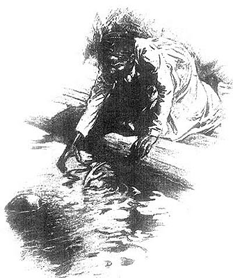

|
 Excerpts
from MT's never-finished "autobiography" appeared serially
in a newspaper supplement titled the Sunday Magazine
between October, 1907, and September, 1908. These
installments were illustrated from a variety of sources,
including original art. There is no mention of a slave in
the text this drawing accompanies, where MT explicitly says
he "does not know" who rescued him each time providence
tried to drown him. However, in the autobiography's account of his boyhood experiences at his Uncle Quarles' farm, which as he notes is the model for the Phelps' plantation in Huck Finn, MT discusses a few of the "fifteen or twenty negroes" his Uncle owned in some detail. Here is MT's most significant published comment on his own firsthand relationship to slavery: "It was a heavenly place for a boy, that farm of my Uncle John's. . . . All the negroes were friends of ours, and with those of our own age we were in effect comrades. I say in effect, using the phrase as a modification. We were comrades, and yet not comrades; color and condition interposed a subtle line which both parties were conscious of, and which rendered complete fusion impossible. We had a faithful and affectionate good friend, ally and adviser in 'Uncle Dan'l,' a middle-aged slave whose head was the best one in the negro quarter, whose sympathies were wide and warm, and whose heart was honest and simple and knew no guile. He has served me well, these many, many years. I have not seen him for more than half a century, and yet spiritually I have had his welcome company a good part of that time, and have staged him in books under his own name and as 'Jim,' and carted him all around--to Hannibal, down the Mississippi on a raft, and even across the Desert of Sahara in a balloon--and he has endured it all with the patience and friendliness and loyalty which were his birthright. It was on the farm that I got my strong liking for his race and my appreciation of certain of its fine qualities. This feeling and this estimate have stood the test of sixty years and more and have suffered no impairment. The black face is as welcome to me now as it was then. "In my schoolboy days I had no aversion to slavery. I was not aware that there was anything wrong about it. No one arraigned it in my hearing; the local papers said nothing against it; the local pulpit taught us that God approved it, that it was a holy thing, and that the doubter need only look in the Bible if he wished to settle his mind--and then the texts were read aloud to us to make the matter sure; if the slaves themselves had an aversion to slavery they were wise and said nothing. In Hannibal we seldom saw a slave misused; on the farm, never. "There was, however, one small incident of my boyhood days which touched this matter, and it must have meant a good deal to me or it would not have stayed in my memory, clear and sharp, vivid and shadowless, all these slow-drifting years. We had a little slave boy whom we had hired from some one, there in Hannibal. He was from the Eastern Shore of Maryland, and had been brought away from his family and his friends, half-way across the American continent, and sold. He was a cheery spirit, innocent and gentle, and the noisiest creature that ever was, perhaps. All day long he was singing, whistling, yelling, whooping, laughing--it was maddening, devastating, unendurable. At last, one day, I lost all my temper and went raging to my mother, and said Sandy had been singing for an hour without a single break, and I couldn't stand it, and wouldn't she please shut him up. The tears came into her eyes, and her lip trembled, and she said something like this-- "'Poor thing, when he sings, it shows that he is not remembering, and that comforts me; but when he is still, I am afraid he is thinking, and I cannot bear it. He will never see his mother again; if he can sing, I must not hinder it, but be thankful for it. If you were older, you would understand me; then that friendless child's noise would make you glad.' "It was a simple speech, and made up of small words, but it went home, and Sandy's noise was not a trouble to me any more. . . ." [This passage also appeared earlier in The North American Review (1 March 1907), the Boston journal that first published the excerpts from MT's Autobiography.] |